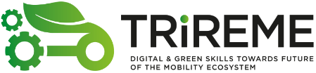
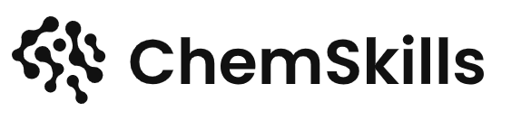
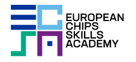
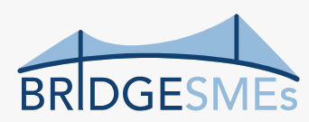

01
Technological Innovation
Software and system engineering in the era of AI, system and software development processes, quality, safety and cybersecurity, connected and automated driving, and software-defined vehicles.
VSB – Technical University of Ostrava · Faculty of Electrical Engineering and Computer Science · Department of Computer Science
Research and development connecting skills intelligence, software and system engineering in the era of AI, advanced learning solutions, and strategic collaboration in the European skills ecosystem.
Research & development focus
The lab is part of VSB – Technical University of Ostrava, Faculty of Electrical Engineering and Computer Science, Department of Computer Science. Its research and development focus is organised into three connected areas.
Software and system engineering in the era of AI, system and software development processes, quality, safety and cybersecurity, connected and automated driving, and software-defined vehicles.
AI-powered learning approaches, adaptive learning, recommendation systems, personalised educational pathways, digital delivery, VR/XR, digital tools, and micro-credentials.
Data-driven and AI-driven methodologies, tools for extraction, analysis, matching and forecasting, skills intelligence gathering, and reference definitions of skills and job roles.
Collaboration & Network
Strategic collaboration supports the three research areas through European skills networks, industry and engineering communities, projects, and events at European, national and regional level.
Products
The lab product portfolio includes Skills Hub, Dovednosti-MSK, and Learning Platform, connected to work on digital solutions for skills and workforce ecosystems.
Advanced digital solution for skills and workforce ecosystems.
Online skills and learning catalogue connecting courses, occupations, competences and training providers in the Moravian-Silesian Region.
Learning platform supporting the digital delivery of needed skills.
International collaboration
Selected running projects span ERASMUS+ Blueprint projects, Horizon Europe, and the Just Transition Fund Mechanism.




Team
SkillsTech Lab is led by Ing. Jakub Štolfa, Ph.D., with Ing. Svatopluk Štolfa, Ph.D. as Deputy Lab Leader, alongside the wider team and PhD, Master and Bachelor students.
See the leadership structure, team members and PhD, Master and Bachelor student involvement.
SkillsTech Lab
Explore the lab's research and development focus, strategic network, products, selected projects and team.